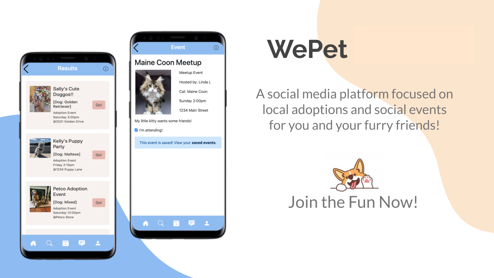
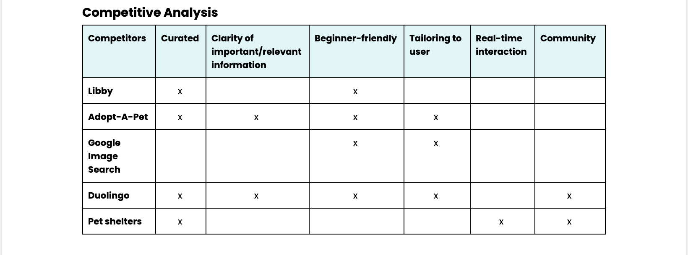
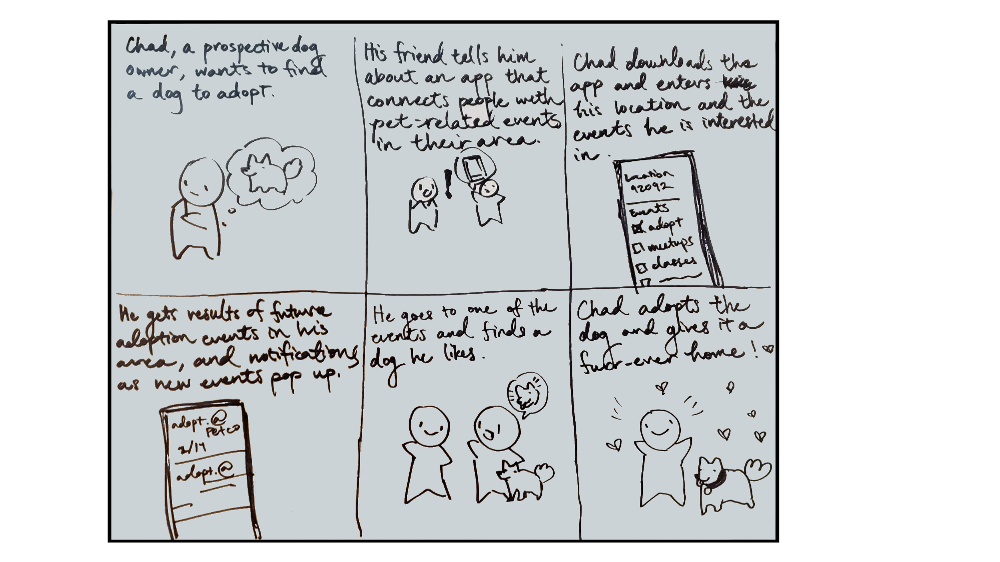
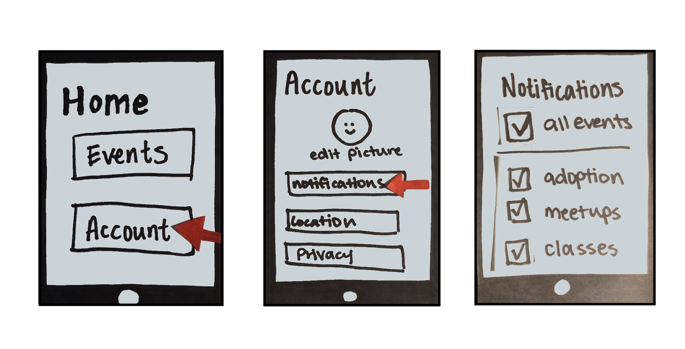
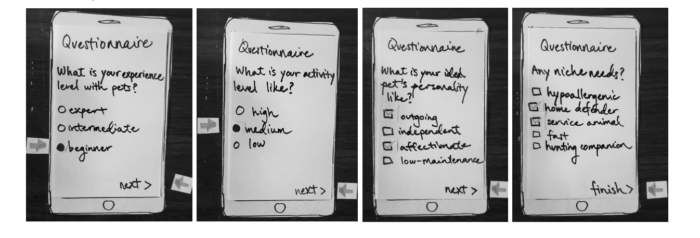
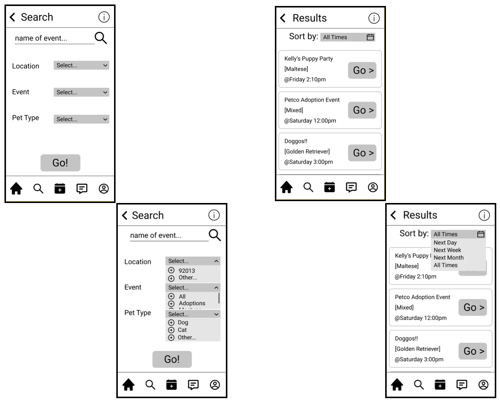
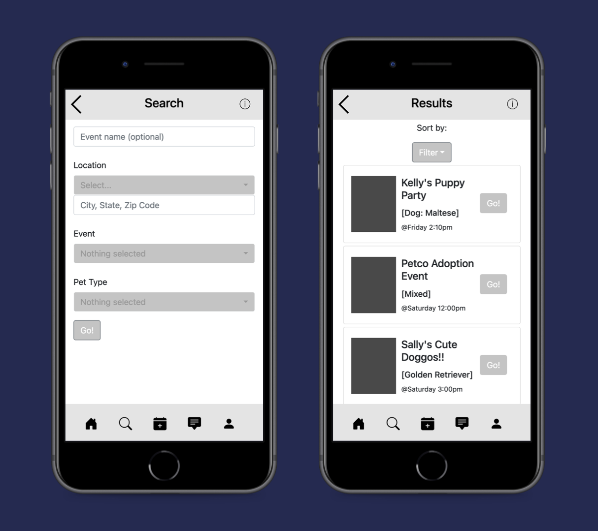
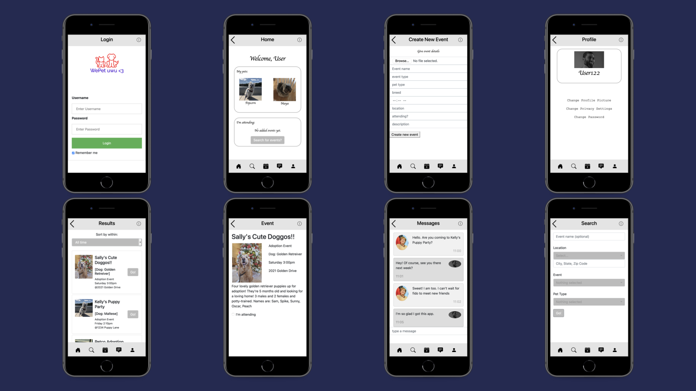
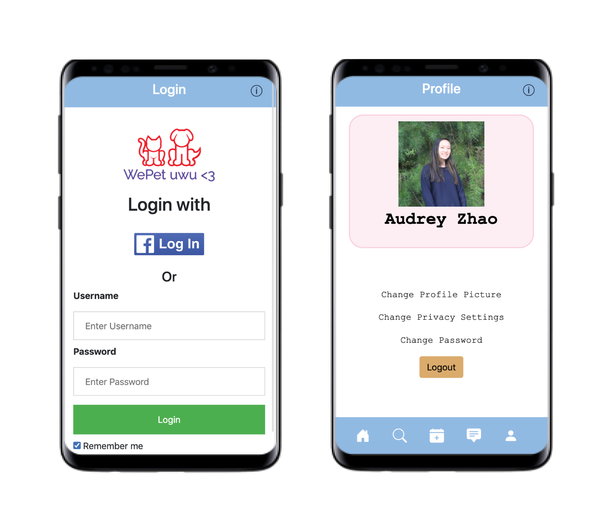
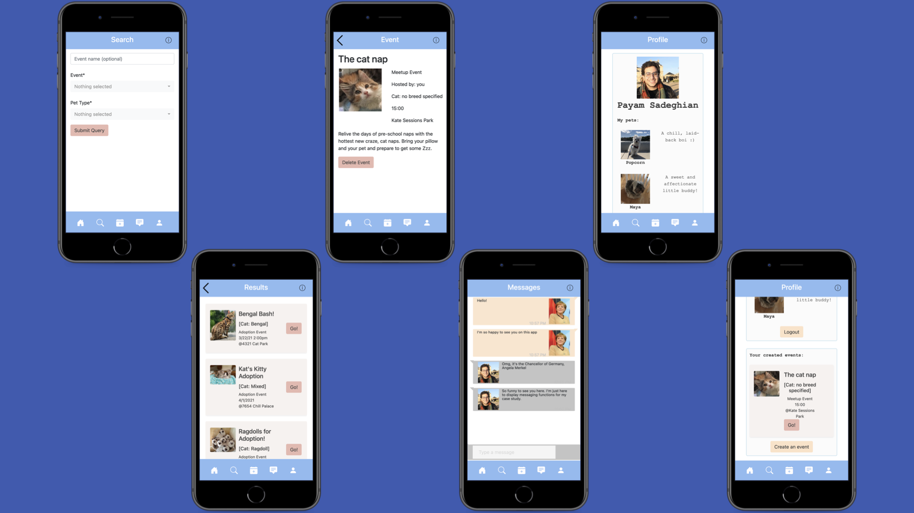

UX · Case Study · Mobile App
A mobile social media app designed to connect pets and people. WePet lets users discover and share pet events like adoptions and meetups, follow other users, and message within the community.
Overview
WePet is a social platform built for pet owners who want to find a community. Users can share and browse events like adoptions and pet meetups, connect with like-minded people, and swap photos of their animals.
The app was developed over 6 weeks for an Interaction and Design course at UC San Diego.
My roles: Wireframing, prototyping, HTML & CSS, aesthetics & formatting, messaging functionality in JavaScript.

Research & Background
The Problem
Conventional social apps like Facebook can feel overwhelming and off-topic for pet owners who just want to find local events, adoptions, or fellow animal lovers. How can we make that discovery effortless?
Competitive Analysis
We analyzed existing products that offer similar experiences to identify gaps and opportunities — what to build on, and where they fell short.

Turning Ideas into Models

Storyboarding
We crafted storyboards to depict our target audience and how the app would satisfy their needs. These then fed directly into paper prototypes for early user testing.
Prototyping
The first depicted a home interface routing to events. The second showed a personality questionnaire to match users with the right pet. Both were used for hands-on testing.


User Testing
Three classmates ran through both paper prototypes and evaluated them against Nielsen's 10 Usability Heuristics. The majority called out the need for a back button. Users preferred the events-oriented design over the questionnaire, which interrupted the flow of the app.
Based on this feedback, we pivoted toward a Facebook-style community app focused on pet ownership — helping users find and attend local events, adoptions, and meetups, with a special focus on guiding first-time pet owners.
Wireframing
Iterating on our paper prototypes, we produced wireframes to define the search and results flow. Users can filter by event name, location, event type, and pet type, then browse results with time-based filtering.

Turning Models into an App

First Iteration
Our first round of coding used HTML, CSS, and Bootstrap. We created JSON files to hold event data and began using JavaScript to write events to those files dynamically.
Second Iteration
We expanded to more app pages and switched from static HTML to Handlebars for templating. A navigation bar was implemented so users could move freely between pages. We also added a "create event" page and a login screen with username/password authentication.

Polishing the Product

Third Iteration
We applied a cohesive color scheme and refined the visual design. This iteration also saw the integration of Facebook login and a fully working messaging feature between users.
Final Touches
We connected the "create event" page to user profiles and live results. Images were added to events, JSON deletion was implemented, and messaging was finalized.

Going from Here
A matured version of WePet could add a "stories" feature similar to Snapchat. We also wanted to build in tools to actively encourage users to adopt from shelters over breeders.